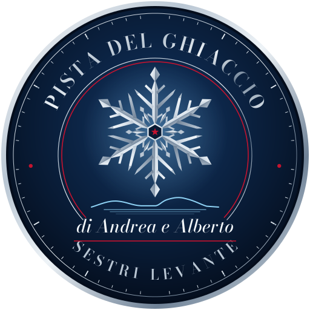

Ciao Alberto! Installiamo l'app della pista
Segui i passi in ordine sul Redmi Pad. Ci vogliono circa 5 minuti. Spunta ogni passo quando l'hai fatto.
Collega il tablet a internet
Serve solo per l'installazione: dopo l'app funziona anche senza rete. Usa il Wi-Fi o l'hotspot del telefono.
Installa l'app
Tocca il pulsante qui sotto e poi Installa.
Se il pulsante non compare: tocca i tre puntini ⋮ in alto a destra in Chrome → Aggiungi a schermata Home (oppure Installa app) → Installa.
Aspetta che scarichi voce e musiche
L'app salva sul tablet tutti gli annunci per funzionare senza internet.
Controllo…
Togli il risparmio energetico a Chrome
Così il tablet non "addormenta" gli annunci dei pinguini.
Impostazioni → App → Gestisci app → Chrome → Risparmio batteria → Nessuna limitazione
Sui Redmi i nomi possono cambiare un po' (es. "Batteria" invece di "Risparmio batteria"). Cerca "Chrome" nelle impostazioni delle app.
Schermo e volume
Lo schermo resta acceso da solo mentre l'app è aperta. Per sicurezza metti lo spegnimento automatico più lungo:
Impostazioni → Display e luminosità → Sospensione → 30 minuti
Alza il volume multimediale del tablet (tasti laterali) e tocca qui per provare:
Apri l'app e avvia la giornata
Chiudi Chrome e apri l'app Pista Ghiaccio dalla schermata Home. Tocca AVVIA GIORNATA, poi scegli che tempo fa.
Ogni giorno: apri l'app → AVVIA GIORNATA → meteo. Se peggiora il tempo, tocca Cambia meteo nella pagina Oggi.
Apri l'app adessoUna volta a settimana: backup
Nell'app: Impostazioni → Backup → Fai il backup. Il file finisce nei Download: mandalo su WhatsApp a Leonardo o salvalo su Google Drive. L'app te lo ricorda dopo 7 giorni.
Tutto pronto! Buona stagione sul ghiaccio ⛸️